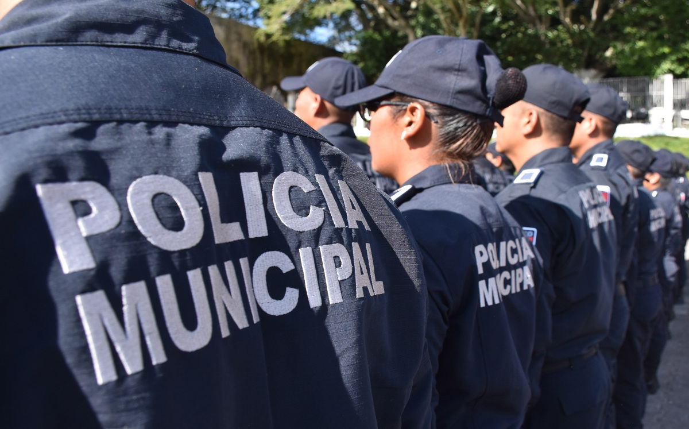

La metodología propuesta se centra en el uso de tecnología para combatir la delincuencia en la comunidad.
Objetivo Específico 1: Implementación de sistemas de vigilancia:
Método: Instalación de cámaras de vigilancia y sistemas de monitoreo.
Técnicas: Selección de ubicaciones estratégicas, configuración de cámaras y sistemas de alerta.
Procedimientos: Evaluación de áreas críticas, instalación y configuración de equipos de vigilancia.
Herramientas: Cámaras de seguridad, sistemas de monitoreo en tiempo real, software de gestión de video.
Objetivo Específico 2: Desarrollo de una plataforma digital de reporte:
Método: Desarrollo de una plataforma en línea para reporte de incidentes.
Técnicas: Diseño de interfaz intuitiva, implementación de funciones de reporte y seguimiento.
Procedimientos: Desarrollo de software, pruebas de usabilidad, implementación de sistemas de seguridad.
Herramientas: Lenguajes de programación web, bases de datos, herramientas de diseño de interfaces.
Etapa 1: Recolección de información contextual
En esta fase inicial, se lleva a cabo una indagación exhaustiva para aproximarse al tema de estudio. Se realiza un diseño de investigación basado en fuentes primarias y secundarias. Las actividades incluyen:
Recolectar información de fuentes primarias y secundarias, como textos académicos, documentos escritos por expertos y recursos en línea.
Consultar bases de datos académicas y sitios web especializados para recopilar datos relevantes sobre el tema.
Identificar y seleccionar la información más pertinente y actualizada para fundamentar el estudio.
Etapa 2: Interpretación y análisis de la información
Una vez recopilada la información, se procede con su análisis e interpretación. Esta etapa implica:
Realizar un análisis cualitativo y/o cuantitativo de los datos obtenidos.
Construir el cuerpo del proyecto, organizando los capítulos y subtemas de acuerdo con las categorías temáticas identificadas durante el análisis.
Interpretar los resultados obtenidos para extraer conclusiones significativas sobre el tema de investigación.
Etapa 3: Presentación de análisis final y formalización del proyecto
En esta fase final, se elabora la presentación de los análisis realizados y se formaliza el proyecto. Las actividades comprenden:
Elaborar un documento final que incluya las conclusiones derivadas del análisis de la información.
Preparar una presentación formal del proyecto que sintetice los hallazgos y conclusiones más relevantes.
Revisar y editar el documento y la presentación para garantizar su claridad y coherencia.
Presentar formalmente el proyecto ante las partes interesadas, como el equipo de investigación, los patrocinadores y otros actores relevantes.
El tipo de estudio que se llevará a cabo es de naturaleza exploratoria y descriptiva. Se utilizará un diseño de investigación no experimental, ya que no se manipularán variables y se observarán los fenómenos en su entorno natural.
El universo del estudio estará constituido por la comunidad rural de “Zacualtipán de Ángeles, Hidalgo”. La muestra será seleccionada mediante muestreo no probabilístico por conveniencia, considerando la accesibilidad de los participantes y su disponibilidad para colaborar en la investigación.
Se establecerán criterios de inclusión para seleccionar a los participantes, los cuales estarán relacionados con su residencia en la comunidad y su disposición para participar en el estudio. Además, se definirá el tamaño de la muestra en función de la viabilidad y los recursos disponibles para la investigación.
Para los estudios cualitativos, se conformarán grupos focales y se seleccionarán informantes clave, considerando su experiencia y conocimiento sobre la problemática de la delincuencia en la comunidad. Los criterios para la selección de estos grupos y participantes se basarán en su relevancia para abordar los objetivos de la investigación.
Dado que los objetivos no incluyen la evaluación de una intervención directa, no se desarrollará esta sección. Los objetivos planteados se centran en el análisis y comprensión de la situación de la delincuencia en Zacualtipán de Ángeles, así como en la identificación de sus causas y consecuencias. El enfoque metodológico se centrará en recolectar y analizar datos para comprender la delincuencia en Zacualtipán de Ángeles. El resultado será un informe con recomendaciones para mejorar la seguridad en colaboración con autoridades locales y la sociedad civil.

Emplearemos diversos procedimientos y técnicas para recolectar información sobre la delincuencia en Zacualtipán de Ángeles:
Encuestas a la comunidad: Se realizarán encuestas estructuradas para recopilar datos sobre la percepción de la delincuencia, la seguridad y las experiencias personales con el crimen. Se utilizarán cuestionarios diseñados específicamente para este propósito.
Entrevistas a profundidad: Se llevarán a cabo entrevistas semi-estructuradas con miembros clave de la comunidad, líderes locales, autoridades policiales y representantes de la sociedad civil. Se utilizarán guías de entrevistas para dirigir la conversación y profundizar en temas relevantes.
Observación participativa: El investigador participará activamente en la comunidad para observar de cerca las dinámicas sociales, los comportamientos delictivos y las respuestas de la comunidad ante la delincuencia. Se utilizarán hojas de registro de observaciones para documentar los hallazgos.
Análisis de datos secundarios: Se analizarán datos existentes, como estadísticas policiales, informes gubernamentales y estudios previos sobre delincuencia en la región. Se evaluará la calidad y relevancia de estos datos para el estudio.
Los instrumentos a utilizar incluirán cuestionarios estructurados, guías de entrevistas, hojas de registro de observaciones y documentos históricos y periodísticos.
Para analizar los datos recopilados en el estudio sobre la delincuencia en Zacualtipán de Ángeles, se utilizarán diversos métodos y modelos de análisis.
Análisis estadístico descriptivo: Se emplearán técnicas estadísticas descriptivas para resumir y presentar los datos cuantitativos recopilados a través de encuestas y registros policiales. Esto incluirá el cálculo de medidas de tendencia central, dispersión y distribución de frecuencias.
Análisis cualitativo de contenido: Se llevará a cabo un análisis cualitativo de contenido para examinar los datos cualitativos obtenidos de entrevistas y observaciones. Esto implicará la identificación de temas recurrentes, patrones y tendencias emergentes en las respuestas de los participantes.
Modelos de regresión: Para examinar la relación entre variables predictoras y la incidencia delictiva en la comunidad. Esto permitirá identificar factores asociados con la delincuencia.
Análisis espacial: Se utilizarán técnicas de análisis espacial para examinar la distribución geográfica de los delitos en Zacualtipán de Ángeles. Esto incluirá la creación de mapas de calor y la identificación de áreas de alta y baja incidencia delictiva.
Para llevar a cabo el análisis de datos en el estudio sobre la delincuencia en Zacualtipán de Ángeles, se utilizarán varios programas especializados que permitirán procesar y analizar la información recopilada.
SPSS (Statistical Package for the Social Sciences): Este software permite realizar análisis estadísticos avanzados. Se utilizará para realizar análisis descriptivos, pruebas de hipótesis y otros análisis cuantitativos de los datos recopilados a través de encuestas y registros policiales.
NVivo: NVivo es una herramienta de análisis cualitativo que facilita la organización. Se empleará para analizar las entrevistas y otras fuentes de datos cualitativos, ayudando a identificar patrones, temas y relaciones entre variables.
ArcGIS: Este software se utilizará para realizar análisis espaciales y generar mapas temáticos. ArcGIS permite identificar patrones espaciales, áreas de concentración delictiva y factores asociados con la incidencia delictiva en diferentes zonas.
Microsoft Excel: Excel se empleará para tareas de organización, limpieza y preparación de datos antes de realizar análisis más avanzados con otros programas. También se utilizará para presentar los resultados de manera clara y concisa mediante tablas y gráficos.